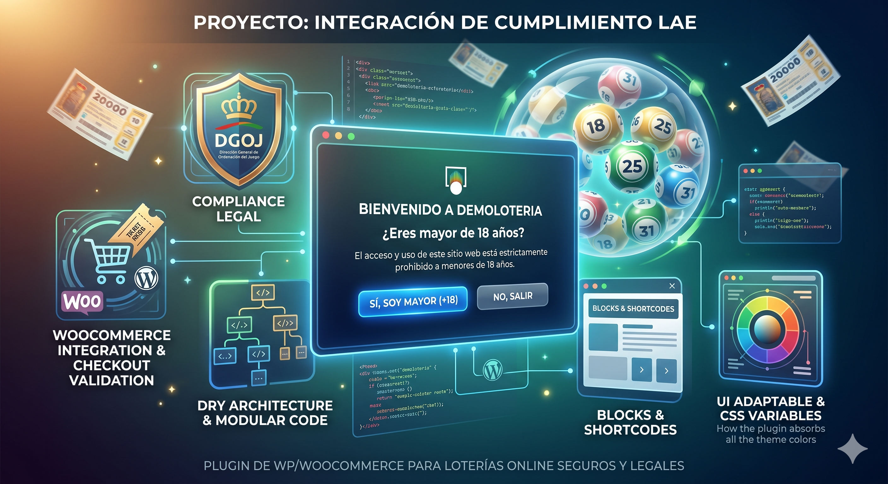
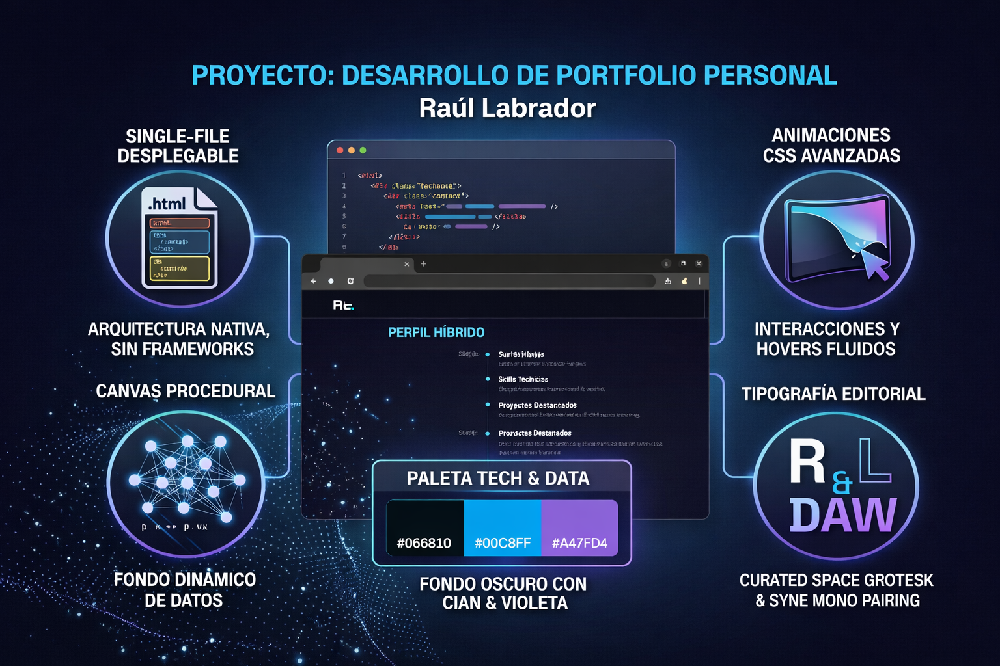

Disponible para nuevas oportunidades
Fullstack Developer · Big Data & AI · Data Designer
Técnico Superior en DAW y DEPIM. Actualmente especializándome en Big Data & Inteligencia Artificial. Construyo soluciones que no solo funcionan — entienden los datos y los presentan con precisión visual.
Mi formación combina el rigor técnico del Desarrollo de Aplicaciones Web (DAW) con el ojo visual del Diseño y Edición de Publicaciones (DEPIM).
Actualmente me especializo en Big Data & IA, cerrando el círculo: capturar el dato, procesarlo con inteligencia y exponerlo a través de interfaces impecables.
Busco equipos donde la tecnología y el dato sean el núcleo, no la decoración.
// nivel de expertise

plugin-LAE.pngPlugin integral de WordPress para garantizar el cumplimiento de normativas de Juego Responsable en España. Arquitectura DRY unificando Bloques Gutenberg y Shortcodes. Integración nativa con la API de WooCommerce para validación en checkout y correos transaccionales. Sistema de variables CSS dinámicas para integración transparente con cualquier tema hijo.

portfolio.pngEste mismo sitio. Diseñado y desarrollado desde cero sin frameworks. Canvas con sistema de partículas procedural, módulos ES6, animaciones CSS avanzadas, tipografía editorial y una paleta orientada a Data & Tech.
Pipeline de análisis de datos con visualizaciones interactivas. Exploración de datasets reales con Python, Pandas y técnicas de ML. Dashboard de resultados desplegado con una interfaz limpia. Proyecto en construcción activa durante la especialización.
Estoy abierto a oportunidades en el sector tech y data — prácticas, proyectos freelance o colaboraciones donde el dato y la tecnología estén en el centro.
raullabrador10@gmail.com